Legame a idrogeno
Il legame a idrogeno è un'interazione elettrostatica dipolo-dipolo, tra l'atomo di idrogeno legato legame covalentemente, ad un atomo molto elettronegativo, X, come (F, O o N) e il doppietto solitario di un altro atomo elettronegativo, X che può essere sempre (F, O o N) di una molecola adiacente. In genere lo si rappresenta come
Il legame idrogeno indicato con i trattini, è molto più debole di un legame covalente; l'energia di legame si aggira attorno ai 10-40 kJ/mol. Per contro l'energia di un legme covalente è di circa 400 kJ/mol. Y è chiamato accettore, poichè accetta l'idrogeno formando il legame a idrogeno. Dunque il legame idrogeno è molto più debole di un legame covalente e per differenziarli si indica un legame a idrogeno con dei trattini (----). La distanza tra gli atomi di H e O uniti da un legame a idrogeno (184 pm) è molto più grande della distanza tra gli stessi atomi uniti da un legame covalente (101 pm).
Why should H2O, NH3, and HF have such strong intermolecular forces? The answer starts with the electronegativities of N (3.0), O (3.5), and F (4.0), which are among the highest of all the elements, whereas the electronegativity of hydrogen is much lower (2.2). This large difference in electronegativity means that N-H, O-H, and F-H bonds are very polar. In bonds between H and N, O, or F, the more electronegative element takes on a significant negative charge, and the hydrogen atom acquires a significant positive charge.
Nel fluoruro di idrogeno gassoso (Boiling point 19.5 °C) molte molecole molte molecole sono unite in strutture cicliche del tipo (HF)6.
Nel fluoruro di idrogeno liquido sono invece presenti cate a zig-zag di molecole HF unite da legami a ideogeno:
Gli idruri presentano punti di ebollizione e fusione che aumentano piuttosto regolarmente all'aumentare delle dimensioni molecolari. Gli idruri HF, H2O e NH3 presentanto punti di fusione e ebollizioni più elevati a causa dell'elettronegatività di N,O e F. Nel caso dell'acqua, i legami O-H sono fortemente polarizzati per cui si ha una parziale carica psotiva sull'idrogeno e una parziale carica negativa sull'ossigeno:
I legami a idrogeno possono essere intermolecolari che intramolecolari.

Boiling points
Il punto di fusione e il punto di ebollizione di una sostanza rappresentano rispettivamente le temprature alle quali il solido fondo e il liquido bolle alla pressione di 1 atmosfera. I valori di queste grandezze sono strettamente legati alle forze di attrazione tra le particelle: per esempio i composti ionici prenestano punti di fusione molto elevati a causa delle forti interazioni elettrostatiche tra ioni di carica opposta, mentre le sostenze molecolari hanno generalmente bassi punti di ebollizione.
Hydrogen fluoride, water, ammonia, and many other compounds with -OH and N-H bonds have exceptional properties, and we can see that by looking at the boiling points for hydrogen compounds of elements in Groups 4A through 7A in Figure 12.6. Generally, the boiling points of related compounds increase with molar mass, and this trend is seen in the boiling points of the hydrogen compounds of Group 4A elements, for example (CH4 < SiH4 < GeH4 < SnH4). The same effect is also operating for the heavier molecules of the hydrogen-containing compounds of Group 5A, 6A, and 7A elements. The boiling points of NH3, H2O, and HF, however, deviate significantly from what might be expected based on molar mass alone. If we extrapolate the curve for the boiling points of H2Te, H2Se, and H2S, the boiling point of water is predicted to be around -90 °C. However, the boiling point of water is almost 200 °C higher than this value! Similarly, the boiling points of NH3 and HF are much higher than would be expected based on molar mass. Because the temperature at which a substance boils depends on the attractive forces between molecules, the extraordinarily high boiling points of H2O, HF, and NH3 indicate strong intermolecular attractions.
Connection to Biological Chemistry
Hydrogen bonds have directionality in that the donor and acceptor groups must be oriented appropriately with respect to each other for hydrogen bonding to occur. Important hydrogen bond donors in biological molecules include -OH groups (proteins, carbohydrates) and -NH groups (proteins, nucleic acids). Important hydrogen bond acceptors are any N or O with a lone pair of electrons, such as C=O groups (proteins, carbohydrates, nucleic acids), -OH groups (proteins, carbohydrates), and COO- groups (proteins). With directionality comes the potential for hydrogen bonds to organize molecules at many levels ranging from the folding of biological molecules to the specific binding and recognition between a pharmaceutical and its receptor.
The drug atorvastatin (Lipitor) is used to treat high cholesterol. Cholesterol is synthesized in the liver from the two-carbon acetyl group of acetyl coenzyme A (acetyl-CoA). A key intermediate in the sequence of reactions leading to the synthesis of cholesterol is a six-carbon molecule named mevalonate (Section 26.4B). Atorvastatin specifically binds to, and blocks the action of, HMG-CoA reductase, a key enzyme in the biosynthesis of mevalonate. Atorvastatin binds to this enzyme in preference to the large number of other potential enzyme targets because (1) the drug has a shape complementary to the catalytic cavity (the active site) of HMG-CoA reductase, and (2) it can form at least nine specific hydrogen bonds with functional groups at the active site on the enzyme (Figure 2). The complementary shape and pattern of hydrogen bonding ensure that atorvastatin binds to HMG-CoA reductase and inhibits its ability to catalyze the formation of mevalonate. The hallmark of this and other effective drugs is their ability to bind strongly with their intended target molecules, while at the same time not interacting with other molecules that could lead to unwanted side effects.
Hydrogen Bonding and the Unusual Properties of Water
One of the most striking differences between our planet and others in our solar system is the presence of large amounts of water on Earth. Three fourths of the planet is covered by oceans; the polar regions are vast ice fields; and even soil and rocks hold large amounts of water. Although we tend to take water for granted, almost no other substance behaves in a similar manner. Water’s unique features are a consequence of the ability of H2O molecules to cling tenaciously to one another by hydrogen bonding. The unusually high intermolecular forces of attraction between water molecules are a result of the fact that each water molecule can participate in four hydrogen bonds. An individual water molecule has two polar -OH bonds and two lone pairs. Both hydrogen atoms are available to hydrogen bond to oxygen atoms in adjacent water molecules. In addition, the oxygen lone pairs can participate in hydrogen bonding to the hydrogen atoms in two other water molecules (Figure 12.8a). The result, seen particularly in ice, is a tetrahedral arrangement for the hydrogen atoms around each oxygen, involving two covalently bonded hydrogen atoms and two hydrogen-bonded hydrogen atoms. As a consequence of the regular arrangement of water molecules linked by hydrogen bonding, ice has an open-cage structure with lots of empty space (Figure 12.8c). The result is that ice has a density about 10% less than that of liquid water, which explains why ice floats. (In contrast, virtually all other solids sink in their liquid phase.) We can also see in this structure that the oxygen atoms are arranged at the corners of puckered, hexagonal rings. Snowflakes are always based on six-sided figures ( ◀ page 68), a reflection of this internal molecular structure of ice. When ice melts at 0 °C, the regular structure imposed on the solid state by hydrogen bonding breaks down, and a relatively large increase in density occurs (Figure 12.9). Another surprising thing occurs when the temperature of liquid water is raised from 0 °C to 4 °C: The density of water increases. For almost every other substance known, density decreases as the temperature is raised. Once again, hydrogen bonding is the reason for water’s seemingly odd behavior. At a temperature just above the melting point, some of the water molecules continue to cluster in ice-like arrangements, which require extra space. As the temperature is raised from 0 °C to 4 °C, the final vestiges of the ice structure disappear, and the volume contracts further, giving rise to the increase in density. Water’s density reaches a maximum at about 4 °C. From this point, the density declines with increasing temperature in the normal fashion. Because of the way that water’s density changes as the temperature approaches the freezing point, lakes do not freeze from the bottom up in the winter. When lake water cools with the approach of winter, its density increases, the cooler water sinks, and the warmer water rises. This “turn over” process continues until all the water reaches 4 °C, the maximum density. (This is the way oxygen-rich water moves to the lake bottom to restore the oxygen used during the summer and nutrients are brought to the top layers of the lake.) As the temperature decreases further, the colder water stays on the top of the lake, because water cooler than 4 °C is less dense than water at 4 °C. With further heat loss, ice can then begin to form on the surface, floating there and protecting the underlying water and aquatic life from further heat loss. Extensive hydrogen bonding is also the origin of the extraordinarily high heat capacity of water. Although liquid water does not have the regular structure of ice, hydrogen bonding still occurs. When the temperature is raised, there must be a signifi cant input of energy to disrupt the intermolecular forces and to raise the temperature even a small amount. The high specific heat capacity of water is, in large part, why oceans and lakes have such an enormous effect on weather. In autumn, when the temperature of the air is lower than the temperature of the ocean or lake, water transfers energy as heat to the atmosphere, moderating the drop in air temperature. Furthermore, so much energy is available to be transferred for each degree drop in temperature that the decline in water temperature is gradual. For this reason, the temperature of the ocean or of a large lake is generally higher than the average air temperature until late in the autumn.